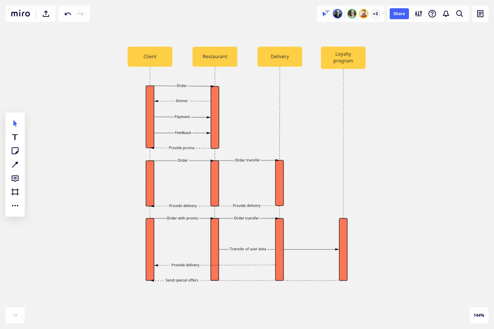

Los diagramas de secuencias en UML son una herramienta de modelado que se utiliza para representar la interacción entre objetos en un escenario particular de un sistema. Estos diagramas muestran la secuencia de mensajes intercambiados entre los objetos a lo largo del tiempo, lo que permite visualizar el comportamiento dinámico del sistema.
El diagrama de secuencia está construido a partir de dos dimensiones:
Horizontal: Representa los objetos que participan en la secuencia.
Vertical: Representa la línea de tiempo sobre la que los elementos actúan. Va de arriba (menor tiempo) hacia abajo (menor tiempo) No es común "reglar" esta dimensión mediante una escala para poner tiempos específicos, a excepción de sistemas de tiempo real donde la velocidad para llevar a cabo la funcionalidad sí es relevante.